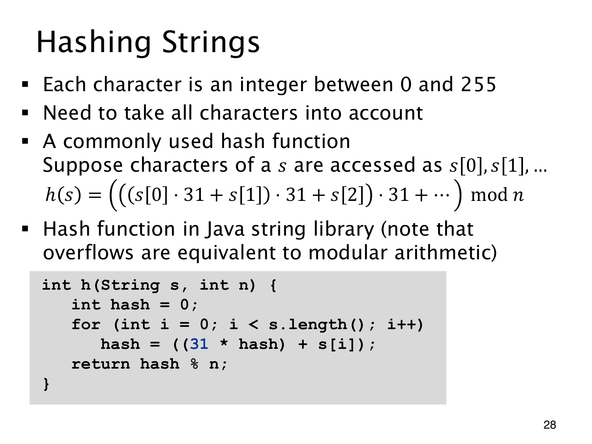

L1.12 · 第 28 页讲解原文
查看这一页课件

字符顺序怎样进入哈希值
字符串的哈希需要考虑每个字符，不能只取最后一个。把字符看成整数编码，从 H0=0 开始，逐个计算
Hi+1=31Hi+s[i].
长度为 ℓ 时，结果展开为 s[0]31ℓ−1+s[1]31ℓ−2+⋯+s[ℓ−1]，最后模 n 得到桶编号。这种嵌套乘加让字符位置也参与计算。
例如编码 65,66 得 65⋅31+66=2081，反过来则为 66⋅31+65=2111。它能区分许多编码和相同、顺序不同的字符串，但最终取模仍可能碰撞。
课件把字符取值简化为 0 到 255，对应字节模型，并未涵盖所有 Unicode 字符。代码中的 s[i] 也是示意，实际 Java 字符串访问通常写 s.charAt(i)。
机器整数还需单独考虑。32 位溢出相当于先模 232 保存位模式，再解释为有符号整数；此后 % n 可能为负，也未必等于无限精度多项式直接模 n。若要得到数学上的非负余数，可用足够宽的中间类型逐次乘加取模；若选择固定宽度哈希，就另将最后结果规范为合法桶编号。